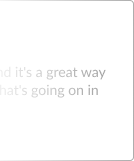
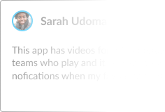
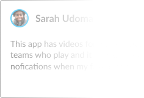

What Our Users Say

 

Noah Jackson
I use this app every day and it's a great way to keep up to date with what's going on in football. It's a shame it won't rotate into landscape mode like its main competitor
Darren Wilson
Good for scores and commentary but the team lineups have stopped working.
Michael Akinuli
Good for watching the goals and great for highlights instead of waiting till 10:30 before you can watch highlights on March of the day also no need of sky go